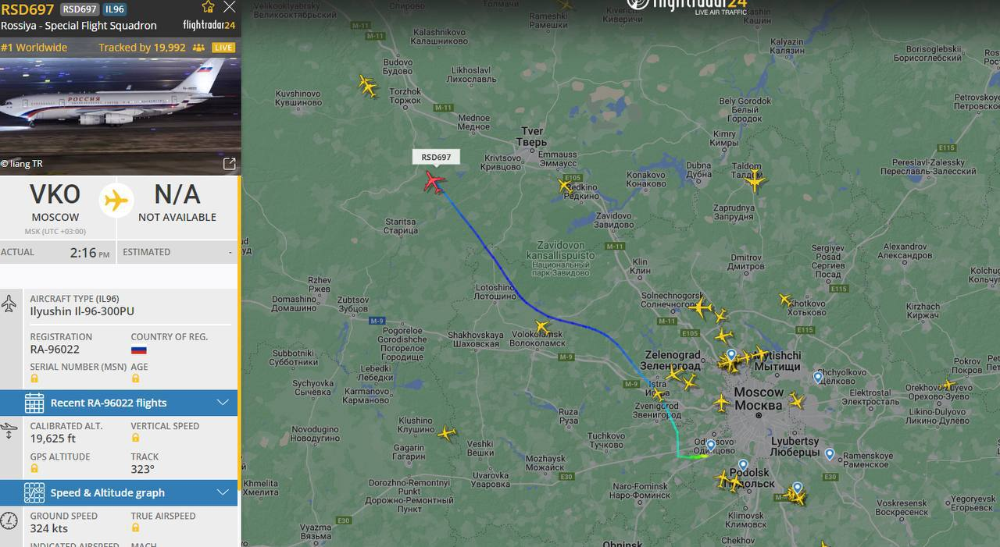
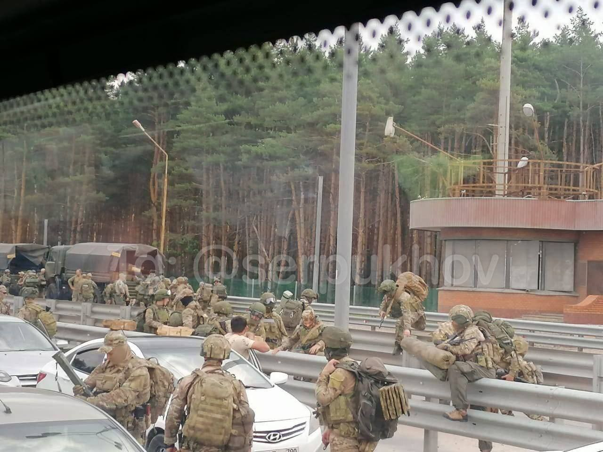

Putin, ağır suç işlememiş olanlar hariç, hükümlülerin sözleşmeli olarak askerlik yapabileceği konusunda bir yasayı imzaladı.
Yasa ayrıca, sınırlı fiziksel yeteneğe sahip olan vatandaşların seferberlik ve savaş zamanında orduyla sözleşme imzalayabileceğini öngörüyor.
Iran Dışişleri Bakanlığı Sözcüsü Naser Kanani, Rusya'daki son olayın bu ülkenin iç sorunu olduğunu belirtti. Ayrıca İran'in Rusya'da hukukun üstünlüğünü desteklediğini vurguladı.
Igor Strelkov: Prihodin Ekibinin Başarı Şansı var.
Igor Strelkov: 'Prihodin ekibinin stratejik fikri son derece açık, mantıklı, çok riskli, ancak etkileyici derecede cesur ve Rusya Federasyonu'nun tüm güç yapılarındaki durgunluk ve motivasyonsuzluk ortamında başarı şansı var. Plan, Rostov'da toparlanıp dikkatleri başka yöne çekerek, savaşa en hazır birliklerle (birkaç bin asker) Moskova'ya hızlı bir baskın düzenlemektir. Görevleri, tüm büyük merkezleri atlamak ve yerel garnizonlarla çatışmaya girmekten kaçınmak ve mümkün olan en kısa sürede Moskova'ya ulaşmak için her türlü yolu denemektir. Sonraki hesaplamalar, panik yaratma ve tüm üst düzey yetkililerin kaçışıyla, yerde yatan iklidarı ele geçirmeye dayanıyor.
Rusya Devlet Başkanı tarafından kullanılan IL-96-300PU yolcu uçağı Moskova'dan St. Petersburg'a yol aldı.
Rus hava kuvvetleri bu sabah Voronej bölgesindeki M-4 otoyolunda bir Wagner mühimmat konvoyunu hedef aldı.
Kaliningrad bölgesinde askerlere silah dağıtıldı, birlikler alarm durumuna geçti. St Petersburg'da savaş alarmı verildi.
Voronej'te bir helikoptere yönelik Rus Havacılık Kuvvetleri'nin Roket Saldırısı Görüntüleri kameraya yansıdı
M-4 otoyolundan Moskova'ya doğru tanklar gidiyor. Video Lipetsk Oblastı'ndan.
PMC Wagner savaşçıları, Rostov'da tanksavar TM-62 mayın engelleri kuruyor.
Bir askeri konvoy Krasnodar'a doğru ilerliyor.
Polonya cumhurbaşkanı, ordunun yüksek alarm durumuna geçirilmesini emretti.
Polonya Cumhurbaşkanı Andrzej Duda, ordunun yüksek alarm durumuna geçirilmesini emretti.
Rus medyası tarafından bildirildi.
"İsyancılar başarıyla Voronej'i geçti ve Lipetsk Oblastı'nın topraklarında ilerliyor." - Igor Strelkov
Bir petrol deposunun Voronej'de yanmakta olduğu bildirildi.
Moskova Oblastı savunmaya hazırlanıyor
Prigozhin'den açıklama
Prigozhin: Vatan hainliği konusunda, başkan derinden yanıldı, biz vatanseveriz. Hiç kimse başkanın, FSB'nin veya başka birinin talebine boyun eğmek için gelmeyecek. Ülkenin yanıltma, yolsuzluk ve bürokrasi içinde yaşamaya devam etmesini istemiyoruz.
Prigozhin Putin'in teslim olma taleplerini reddederek karşılık verdi: "Teslim olmayacağız".
Çeçenistan Cumhuriyeti lideri Ramzan Kadirov, Rusya Savunma Bakanlığı ve Rosgvardiya savaşçılarının Çeçenistan'a gerilim bölgelerine sevk edildiğini belirtti. Kadirov, yaşananların devlete meydan okuma olduğunu ve bu meydan okumaya karşı ulusal liderin etrafında herkesin birleşmesi gerektiğini vurguladı: askerlere, güvenlik güçlerine, valilere ve sivil halka.
Rusya Dışişleri Bakanlığı Sözcüsü Maria Zaharova: Düşman sadece iç savaşı Rusya'da bekliyor, ama beklemeyecek.
Ukrayna Cumhurbaşkanlığı Ofisi Başkanının danışmanı Mikhail Podolyak: Rusya'da iç savaşın başlangıcını görüyoruz.
İlGİLİ Telegram kanalları, Voronezh bölgesinde Rusya Savunma Bakanlığı ile çatışmalar yaşandığını bildiriyor. Aynı zamanda otoyolunda havacılığın faaliyet gösterdiği bilgisi de paylaşılıyor. Ayrıca, Wagner PMC'yi hedef almaya çalışan Rusya Savunma Bakanlığı'na ait bir helikopterin düşürüldüğüne dair bilgiler ortaya çıktı. Bu bilgilerin resmi olarak doğrulanması henüz yok.
Kırım'da Wagner PMC'ye katılma çağrısı yapan afişler kaldırılmaya başlandı.
Putin'den yeni sözlü açıklama 2
Putin'in ulusa hitaben açıklaması: Her şeyi bir tarafa bırakmalıyız. Bizi bölen eylemler ihanettir. Bu ülkemize ve halkımıza ihanettir. Karşılaştığımız şey ihanettir. Yanıtımız sert olacak. Sorumlular kaçınılmaz cezayı çekecek. İlgili organlar zaten emirleri aldı. Ülkemizi savunmak için her şeyi yapacağım.
Putin'den yeni sözlü açıklama
Telegram kaynaklarına göre Putin, Wagner'in isyanının Rus halkının sırtına saplanmış bir bıçak olduğunu söyledi. "Bunun bir daha olmasına izin vermeyeceğiz." "Bu ihanet ve hainliktir" dedi.
Şu anda M-4 otoyolunda 464 ila 777 kilometre arasındaki bölümün trafiğe kapalı olduğu bildirildi.
Voronezh'deki askeri tesisler, Wagner tarafından kontrol altına alındı.
Telegram'daki grupta, "ordu halkın tarafına geçiyor" deniliyor.
Rusya Ulusal Terörle Mücadele Komitesi, olası terör saldırılarını önlemek amacıyla Moskova ve Moskova Oblastı'nda terörle mücadele operasyonu rejiminin uygulandığını bildirdi.
Lipetsk Bölgesi yetkililerine göre tüm kitlesel etkinlikler iptal edildi. Ayrıca, Voronej Bölgesi yetkililerinin de önceden tüm kitlesel etkinlikleri iptal etme kararı aldığını belirtmek isteriz.
Moskova'da güvenlik güçleri M4 Don karayolu üzerindeki Wagner Milisleri ile çatışmaya hazırlanıyor.
Rostov'daki Rus ordusu karargahını ele geçiren Wagner lideri Prigojin:"
"Uçaklarımızın bizi değil, Ukraynayı vurması için havaalanını da kontrol eden Rus ordusunun genel merkezini kontrol altına aldık." dedi.
Prigozhin: "Rostov şehrini abluka altına aldık ve Moskova'ya doğru ilerliyoruz"
Rostov merkezinden bir video daha; Videoda Wagner savaşçılarının görüldüğü bildiriliyor.
Prigozhin'den Yeni Mesaj; Ordunun Yarısı Bizimle Hareket Etmeye Hazır.
Prigozhin'den: Çatışmalar, Rusya Federasyonu liderliği savaşçılara yanıltıcı bilgi veriyor, ancak bizimle el sallayan ve bazı bizimle gitmek isteyen pek çok polis var. Kısa mesafede 60-70 kişi bizimle birleşti. Ordunun yarısı bizimle gelmeye hazırdır diye düşünüyorum.
Wagner Savaş Grubu'nun Rostov şehrini kontrol altına aldığı bildirildi. Grup, Rostov şehrine giriş yaptı.
Prigozhin, Rus hükümetinin PMC'leri durdurmaya çalışmaları halinde "etraflarındaki her şeyi yok edeceklerini" söyledi.
Rus telegram kaynaklarına göre, Wagner komitesinin 25.000 personeli var ve bunların hepsi ölmeye hazır.